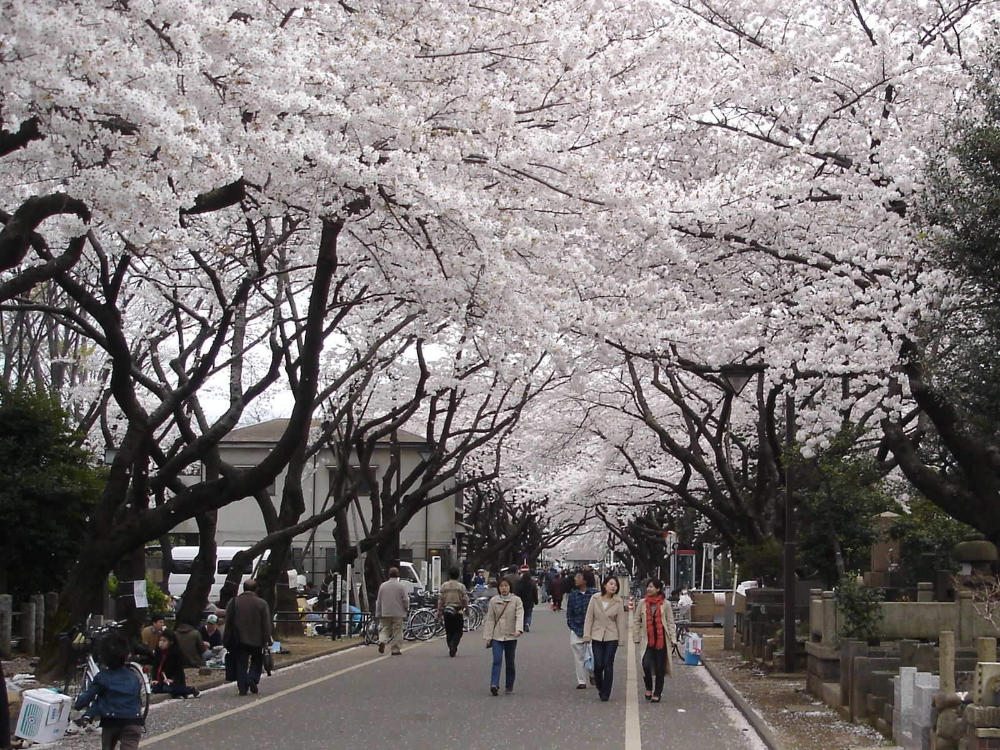
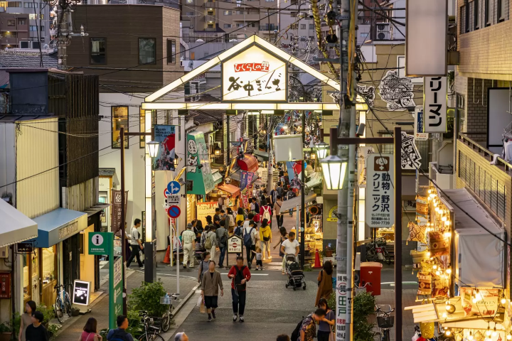
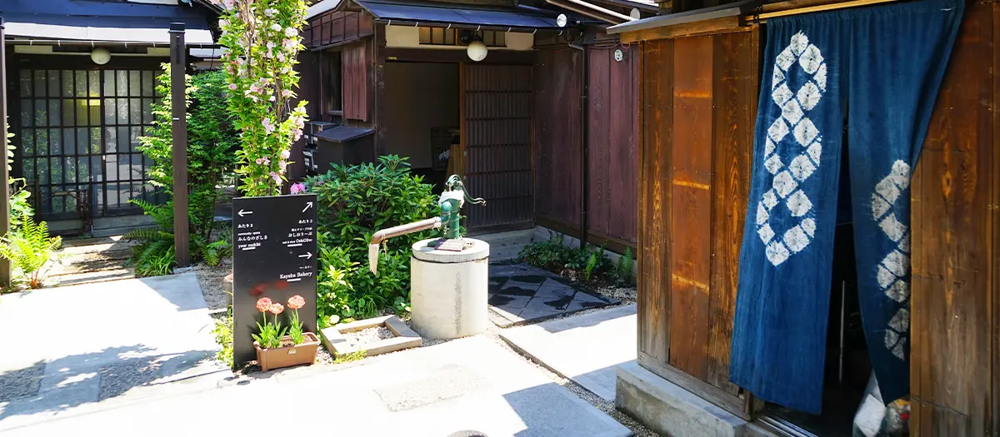
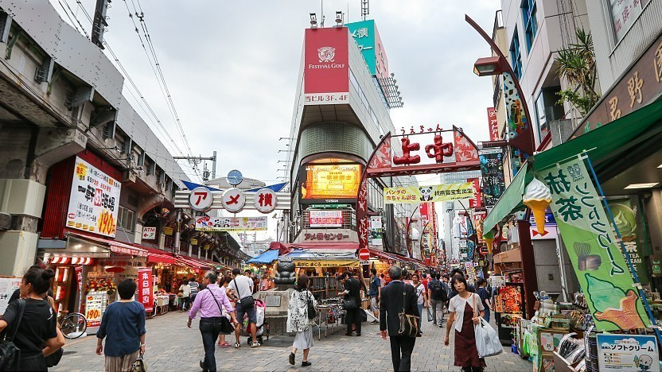
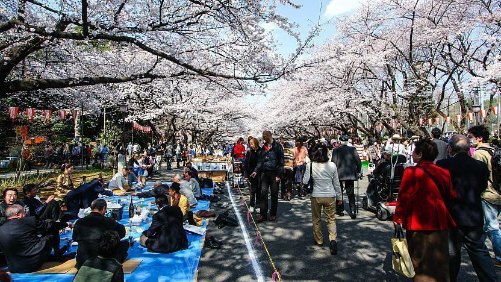
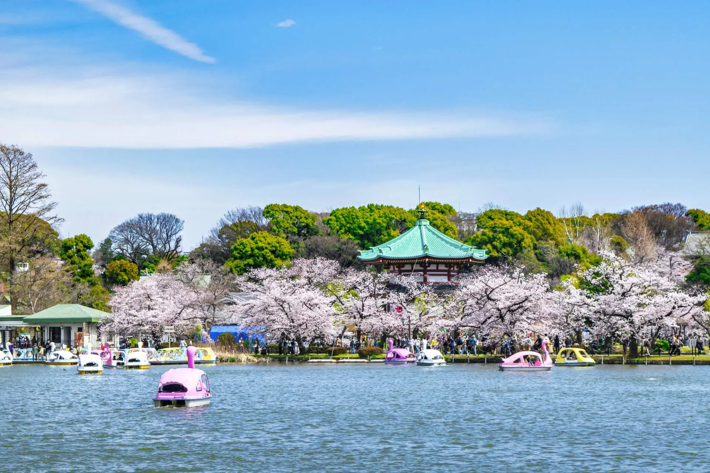

Tokyo Walking Tours
Private, customized walking tours through authentic Tokyo crafted around your interests, your pace, your time.
About Totonou Travel
No cookie-cutter temple circuits. No fish market crowds. Totonou Travel brings you into the real Tokyo, the neighbourhood kissaten cafés, the quiet shotengai streets, the hanami spots locals actually use.
Every tour is built around you , your interests, your walking pace, what you actually want to experience.
Tell us your interests, we build the route around them.
Just your group, no strangers, no rushing.
Hidden spots, honest food picks, and the context that makes it meaningful.
Tour Options
Choose a short neighborhood stroll or a fuller half-day journey through Tokyo.
Flat hourly rate. No hidden fees. Just great Tokyo.
Tour Packages
Every tour is private and built for your group.
A focused walk through one neighbourhood. Perfect for a short window between other plans.
A relaxed half-morning covering two neighbourhoods with a coffee stop along the way.
The most popular option, enough time to go deep, with space to linger where you love.
A complete cross-city journey, from old shitamachi lanes to modern Tokyo's energy.
Sample Itinerary
4-hour tour · Yanaka → Ueno · Cherry blossom season
One of Tokyo's most peaceful sakura spots, a canopy of white blossoms with no tourist crowds. Also: the grave of Tokugawa Yoshinobu, Japan's last Shogun.
Old Tokyo's most authentic shotengai, 'cat town' to locals, with warm menchi katsu and sembei fresh from family shops.
A courtyard of beautifully restored Meiji-era houses, handmade crafts, Kayaba Bakery coffee, a perfect gentle rest stop.
Pick up your hanami picnic here, onigiri, yakitori, fresh fruit stalls, the sound of vendors calling out to the crowd.
Over 1,000 sakura trees. Spread out on the blossom avenue and watch Tokyo families, students, and office workers all celebrate spring together.
End with a peaceful pond walk, swan boats, birdlife, and Bentendo Hall framed by sakura. One of Tokyo's most photogenic spring views.






Fully customizable
Prefer food to history? Skip the cemetery and add Kagurazaka’s Franco-Japanese lanes. More of a photography person? The pace and timing can be adjusted for the best light.
Request this tourHow it works
Tell us what draws you to Tokyo. We'll build your route, timings, and stops specifically for your group.
Choose up to 3 interests to help shape your tour.
Get in Touch
Send us a message with your preferred date, duration, and interests. We'll reply within 24 hours with a proposed itinerary.